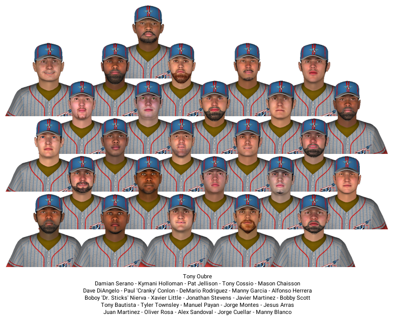

ABC Western Division
Denver Rocketeers
66–55 · 3 games back · Rocketeers Field
Recent results
Upcoming schedule
Denver Rocketeers beat
The latest final on August 19 was Cincinnati 4, Denver 1.
This beat has results, upcoming games and franchise records. Its article archive is open for future coverage.
Franchise history
League almanac| Season | Franchise | W–L | Finish |
|---|---|---|---|
| 1980 | Denver Rocketeers | 78–84 | Regular season |
| 1979 | Denver Rocketeers | 66–96 | Regular season |
| 1978 | Denver Rocketeers | 64–98 | Regular season |
| 1977 | Denver Rocketeers | 72–90 | Regular season |
| 1976 | Denver Rocketeers | 69–93 | Regular season |
| 1975 | Denver Rocketeers | 65–97 | Regular season |
| 1974 | Denver Rocketeers | 95–67 | Tournament |
| 1973 | Denver Rocketeers | 87–75 | Champion |
| 1972 | Denver Rocketeers | 92–70 | Tournament |
Team portrait
